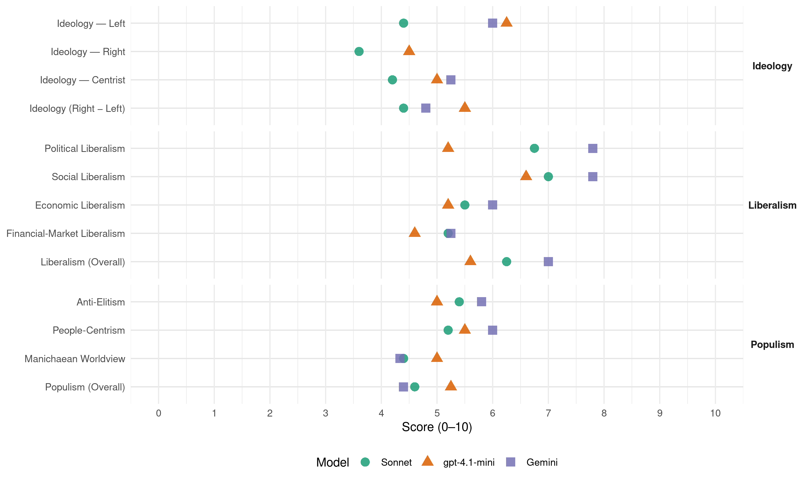

DL (Spain, 2015)
manifesto_id 33099_201512
Get full text: This site shows derived annotations and short verbatim quotes only. The full manifesto text is © Manifesto Project / WZB — obtain it via manifesto-project.wzb.eu using the manifesto_id above.
Headline scores
| Dimension | Sonnet | gpt-4.1-mini | Gemini |
|---|---|---|---|
| Populism (Overall) | 4.6 | 5.2 | 4.4 |
| Anti-Elitism | 5.4 | 5.0 | 5.8 |
| People-Centrism | 5.2 | 5.5 | 6.0 |
| Manichaean Worldview | 4.4 | 5.0 | 4.3 |
| Ideology (Right − Left) | 4.4 | 5.5 | 4.8 |
| Liberalism (Overall) | 6.2 | 5.6 | 7.0 |
| Political Liberalism | 6.8 | 5.2 | 7.8 |
| Social Liberalism | 7.0 | 6.6 | 7.8 |
| Economic Liberalism | 5.5 | 5.2 | 6.0 |
| Financial-Market Liberalism | 5.2 | 4.6 | 5.2 |
Evidence per dimension
Economic Liberalism
Gemini · score 5.0 · verified · chunk 1
“respectar els criteris legals de competitivitat”
poden treballar sense respectar els criteris legals de competitivitat i/o defensa dels consumidors existents a Catalunya
Gemini · score 5.0 · verified · chunk 2
“funcionament dels mercats mateixos”
deteriorar la qualitat institucional i de funcionament dels mercats mateixos, a causa de l’augment
Gemini · score 7.0 · verified · chunk 3
“reduir el tipus de l’impost sobre societats per a les pimes”
compensar les maniobres fiscals de certes grans empreses. Rebaixarem el tipus de l’impost sobre societats per a les pimes del 25% al 20%, en línia amb la rebaixa de 5 punts del tipus general, aprovada en la darrera reforma de l’impost i que s’aplica a les grans empreses.
Gemini · score 7.0 · verified · chunk 4
“defensat amb prou energia la competència front aquesta amenaça”
Mai a Espanya s’ha defensat amb prou energia la competència front aquesta amenaça. Cal denunciar la regulació
Gemini · score 6.0 · verified · chunk 5
“completar el mercat interior de la Unió Europea”
Continuarem apostant per completar el mercat interior de la Unió Europea amb una defensa específica
gpt-4.1-mini · score 2.0 · verified · chunk 1
“l’ofec econòmic al qual s’ha sotmès al Govern de la Generalitat, tant a través d’uns objectius de dèficit públic injustos”
…L’ofegament econòmic al qual s’ha sotmès al Govern de la Generalitat, tant a través d’uns objectius de dèficit públic injustos com del persistent dèficit fiscal, ha estat notable. La darrera mesura ha estat la intervenció de la Generalitat a través del control absolut de les seves finances…
gpt-4.1-mini · score 6.0 · verified · chunk 2
“model comercial català. L’Estat, amb la seva voluntat uniformitzadora”
Model comercial català. L’Estat, amb la seva voluntat uniformitzadora, ha obert litigis en tots els àmbits (horaris, rebaixes, ordenació comercial, etc.) i sota l’excusa d’una major eficiència econòmica ha continuat aplicant mesures recentralitzadores per tal d’atacar el model català de comerç.
gpt-4.1-mini · score 6.0 · verified · chunk 3
“Promourem una fiscalitat: Que estimuli més la creació d’ocupació”
Promourem una fiscalitat: Que estimuli més la creació d’ocupació. Que contribueixi a combatre les desigualtats, de manera que aportin més els que més tenen. Que afavoreixi el creixement econòmic, sabent que tenim un teixit productiu de petites i mitjanes empreses que són motors de generació d’activitat productiva.
gpt-4.1-mini · score 7.0 · verified · chunk 4
“Rebaixarem el tipus de l’impost sobre societats per a les pimes del 25% al 20%”
És fonamental que es restableixi un camp de joc equilibrat entre PIMEs i multinacionals, i que les primeres no hagin de pagar per compensar les maniobres fiscals de certes grans empreses. Rebaixarem el tipus de l’impost sobre societats per a les pimes del 25% al 20%, en línia amb la rebaixa de 5 punts del tipus general, aprovada en la darrera reforma de l’impost i que s’aplica a les grans empreses.
gpt-4.1-mini · score 5.0 · verified · chunk 5
“Impulsarem en el si de la Unió Europea la entrada en vigor de la Taxa a les Transaccions Financeres”
Impulsarem en el si de la Unió Europea la entrada en vigor de la Taxa a les Transaccions Financeres i assegurarem que a nivell de l’Estat es destini a finançar, addicionalment als recursos pressupostaris ja existents, polítiques socials específiques dirigides a les persones més vulnerables, així com programes de cooperació internacional contra la fam, la pobresa i la desigualtat.
Sonnet · score 4.0 · verified · chunk 1
“ofec econòmic sistemàtic per part de l’Estat”
A aquesta crisi s’hi ha afegit un ofec econòmic sistemàtic per part de l’Estat espanyol que no només ens ha obligat a complir uns objectius de dèficit absolutament injustos
Sonnet · score 5.0 · mixed · chunk 2
“major eficiència econòmica ha continuat aplicant mesures recentralitzadores”
sota l’excusa d’una major eficiència econòmica ha continuat aplicant mesures recentralitzadores per tal d’atacar el model català de comerç
Sonnet · score 6.0 · verified · chunk 3
“autonomia de les universitats (organitzativa, financera, de gestió”
Flexibilitzarem la legislació vigent en matèria universitària per tal de reforçar l’autonomia de les universitats (organitzativa, financera, de gestió de personal i acadèmica).
Sonnet · score 6.0 · verified · chunk 4
“Rebaixarem el tipus de l’impost sobre societats per a les pimes del 25% al 20%”
Rebaixarem el tipus de l’impost sobre societats per a les pimes del 25% al 20%, en línia amb la rebaixa de 5 punts del tipus general
Sonnet · score 6.0 · verified · chunk 5
“completar el mercat interior de la Unió Europea”
Continuarem apostant per completar el mercat interior de la Unió Europea amb una defensa específica del manteniment i l’enfortiment de les quatre llibertats
Financial-Market Liberalism
Gemini · score 3.0 · verified · chunk 1
“Impost sobre dipòsits en entitats de crèdit”
destaquen:Taxes judicials catalanes. Taxa de “euro per recepta”. Impost sobre dipòsits en entitats de crèdit. L’impost sobre la producció d’energia elèctrica
Gemini · score 7.0 · verified · chunk 3
“estatut de l’inversor que protegeixi els inversors minoristes”
de les finances alternatives realitzades a través de les plataformes digitals, i alhora, garantint la protecció dels consumidors. Aprovarem un estatut de l’inversor que protegeixi els inversors minoristes i apliqui la normativa europea de protecció dels consumidors en l’àmbit financer (directives MiFID).
Gemini · score 7.0 · verified · chunk 4
“protegeixi els inversors minoristes i apliqui la normativa”
Aprovarem un estatut de l’inversor que protegeixi els inversors minoristes i apliqui la normativa europea de protecció
Gemini · score 4.0 · verified · chunk 5
“Taxa a les Transaccions Financeres”
Impulsarem en el si de la Unió Europea la entrada en vigor de la Taxa a les Transaccions Financeres
gpt-4.1-mini · score 1.0 · verified · chunk 1
“intervenció financera del Govern de la Generalitat”
…El Govern del PP justifica aquesta intervenció a partir d’una despesa de 1.300 M€, que amb només criteris electorals argumenten desconèixer… El Govern espanyol: controla l’accés de la Generalitat a l’endeutament, té la possibilitat d’exigir mesures d’ajustament d’ingressos i despeses…
gpt-4.1-mini · score 4.0 · verified · chunk 2
“SAREB, una societat propietària de centenars de pisos buits”
L’Estat avui disposa d’instruments que no utilitza, com per exemple la SAREB, una societat propietària de centenars de pisos buits, procedents dels desnonaments, dels quals només una petita part s’ha posat a disposició d’ajuntaments i de la Generalitat.
gpt-4.1-mini · score 7.0 · verified · chunk 3
“Actuarem en l’àmbit de la competència bancària, mitjançant la legislació d’entitats de crèdit”
Actuarem en l’àmbit de la competència bancària, mitjançant la legislació d’entitats de crèdit, per evitar posicions de domini, facilitant la diversificació dels tipus d’entitats financeres (cooperatives de crèdit, caixes populars, banca ètica), tot garantint la solvència del conjunt del sistema i la protecció dels consumidors.
gpt-4.1-mini · score 7.0 · verified · chunk 4
“Actuarem en l’àmbit de la competència bancària, mitjançant la legislació d’entitats de crèdit”
Cal defensar un sistema financer que estigui al costat de l’economia productiva, que compleixi la seva funció de canalització de l’estalvi cap al crèdit i la inversió, a la vegada que eviti posicions de domini en el mercat de qualsevol entitat i que diversifiqui els canals del crèdit i la inversió, incrementant la protecció dels consumidors en l’àmbit financer. Així, doncs:Actuarem en l’àmbit de la competència bancària, mitjançant la legislació d’entitats de crèdit, per evitar posicions de domini, facilitant la diversificació dels tipus d’entitats financeres (cooperatives de crèdit, caixes populars, banca ètica), tot garantint la solvència del conjunt del sistema i la protecció dels consumidors.
gpt-4.1-mini · score 4.0 · verified · chunk 5
“Revisarem el model Defensa i els seus programes especials d’armament”
Revisarem el model Defensa i els seus programes especials d’armament i exigirem el compliment de la Llei general pressupostaria i de la Llei d’estabilitat pressupostària aplicable al Ministeri de Defensa, evitant així la presentació de futurs reials secrets per cobrir despeses ja conegudes.
Sonnet · score 4.0 · verified · chunk 1
“intervenció financera del Govern de la Generalitat”
tutela que finalment ha reblat amb l’acord… que suposa la intervenció financera del Govern de la Generalitat
Sonnet · score 5.0 · verified · chunk 2
“accés al crèdit per a capitalització”
Garantirem l’accés al crèdit per a capitalització i circulant de les diferents línies de l’Instituto de Crédito Oficial (ICO) a les entitats del tercer sector
Sonnet · score 6.0 · verified · chunk 3
“protecció dels consumidors en l’àmbit financer”
Aprovarem un estatut de l’inversor que protegeixi els inversors minoristes i apliqui la normativa europea de protecció dels consumidors en l’àmbit financer (directives MiFID).
Sonnet · score 6.0 · verified · chunk 4
“Actuarem en l’àmbit de la competència bancària”
Actuarem en l’àmbit de la competència bancària, mitjançant la legislació d’entitats de crèdit, per evitar posicions de domini, facilitant la diversificació dels tipus d’entitats financeres
Sonnet · score 5.0 · verified · chunk 5
“Taxa a les Transaccions Financeres”
Impulsarem en el si de la Unió Europea la entrada en vigor de la Taxa a les Transaccions Financeres i assegurarem que a nivell de l’Estat es destini a finançar
Political Liberalism
Gemini · score 8.0 · verified · chunk 1
“respecte degut a les regles del joc”
es requereix el reconeixement internacional, cosa que va lligada amb el respecte degut a les regles del joc i a les de la cultura democràtica
Gemini · score 8.0 · verified · chunk 2
“principi constitucional de separació de poders”
a més, trenca amb el principi constitucional de separació de poders, de manera que a la llarga
Gemini · score 7.0 · verified · chunk 3
“reforçar l’autonomia de les universitats”
recaure el seu cost de manera injusta en el sistema universitari català. Flexibilitzarem la legislació vigent en matèria universitària per tal de reforçar l’autonomia de les universitats (organitzativa, financera, de gestió de personal i acadèmica), possibilitant el desenvolupament d’òrgans de govern
Gemini · score 8.0 · verified · chunk 4
“garantir la independència dels vocals del Consejo General”
destinades a garantir la independència dels vocals del Consejo General del Poder Judicial i dels membres del Tribunal Constitucional
Gemini · score 8.0 · verified · chunk 5
“vulnerar greument el principi de separació de poders”
cosa que, a més de vulnerar greument el principi de separació de poders, significa situar el Tribunal Constitucional
gpt-4.1-mini · score 3.0 · verified · chunk 1
“la democràcia de l’Estat, després de quatre anys de govern del Partit Popular, és significativament més dèbil”
…En definitiva, es constata que la democràcia de l’Estat, després de quatre anys de govern del Partit Popular, és significativament més dèbil que abans de començar la legislatura, cosa que urgeix corregir, atès que Catalunya n’ha resultant especialment perjudicada…
gpt-4.1-mini · score 3.0 · verified · chunk 2
“trencat normes fonamentals de la democràcia”
No ho ha evitat, però en la seva fal·lera per fer-ho ha trencat normes fonamentals de la democràcia, com ara fer una reforma exprés del Tribunal Constitucional per donar resposta al procés català.
gpt-4.1-mini · score 6.0 · verified · chunk 3
“Garantirem que el català sigui reconegut i acceptat com a llengua de ple dret”
Garantirem que el català sigui reconegut i acceptat com a llengua de ple dret en tots els organismes internacionals, especialment tots els que depenen de l’entramat d’institucions europees.
gpt-4.1-mini · score 7.0 · verified · chunk 4
“la Llei 19/2013, de 9 de desembre, de transparència, accés a la informació pública i bon govern”
En funció pública, també, la Llei 19/2013, de 9 de desembre, de transparència, accés a la informació pública i bon govern, on l’Estat imposa determinades mesures limitadores de la contractació de caràcter conjuntural, com ara la prohibició d’incorporar nou personal excepte en determinats sectors i la impossibilitat de contractar personal temporal i de nomenar personal estatutari temporal o funcionaris interins, llevat de casos excepcionals.
gpt-4.1-mini · score 7.0 · verified · chunk 5
“La derogació de la darrera reforma de la Llei orgànica del Tribunal Constitucional”
Cal impulsar des del Congrés dels Diputats mesures d’urgència relatives a una profunda regeneració democràtica, que corregeixin el deteriorament de la democràcia durant la legislatura del 2011-2015, algunes de les quals ja han estat citades en apartats anteriors: La derogació de la darrera reforma de la Llei orgànica del Tribunal Constitucional, la qual permet que el Tribunal Constitucional pugui arribar a suspendre de funcions càrrecs electes, cosa que, a més de vulnerar greument el principi de separació de poders, significa situar el Tribunal Constitucional per damunt dels electors mateixos que han escollit un Parlament o un Govern.
Sonnet · score 6.0 · verified · chunk 1
“trenca amb el principi constitucional de separació de poders”
una Llei orgànica anti-president Mas i anti-Parlament de Catalunya que, a més, trenca amb el principi constitucional de separació de poders
Sonnet · score 5.0 · mixed · chunk 2
“trenca amb el principi constitucional de separació de poders”
És una Llei orgànica anti-president Mas i anti-Parlament de Catalunya que, a més, trenca amb el principi constitucional de separació de poders
Sonnet · score 7.0 · verified · chunk 3
“autonomia local que és injustificada i desproporcionada”
Derogarem la Llei 27/2013… ja que suposa una ingerència en el principi d’autonomia local que és injustificada i desproporcionada, i que en matèria d’igualtat i violència de gènere impedeix l’efectiva realització de polítiques de proximitat.
Sonnet · score 7.0 · verified · chunk 4
“garantir la independència dels vocals del Consejo General del Poder Judicial”
Procedirem a l’adopció de mesures destinades a garantir la independència dels vocals del Consejo General del Poder Judicial i dels membres del Tribunal Constitucional, com element imprescindible d’un Estat de Dret
Sonnet · score 7.0 · verified · chunk 5
“vulnerar greument el principi de separació de poders”
cosa que, a més de vulnerar greument el principi de separació de poders, significa situar el Tribunal Constitucional per damunt dels electors
Liberalism (Overall)
Gemini · score 6.0 · verified · chunk 1
“respecte degut a les regles del joc”
es requereix el reconeixement internacional, cosa que va lligada amb el respecte degut a les regles del joc i a les de la cultura democràtica
Gemini · score 7.0 · verified · chunk 2
“principi constitucional de separació de poders”
a més, trenca amb el principi constitucional de separació de poders, de manera que a la llarga
Gemini · score 7.0 · verified · chunk 3
“estatut de l’inversor que protegeixi els inversors minoristes”
de les finances alternatives realitzades a través de les plataformes digitals, i alhora, garantint la protecció dels consumidors. Aprovarem un estatut de l’inversor que protegeixi els inversors minoristes i apliqui la normativa europea de protecció dels consumidors en l’àmbit financer (directives MiFID).
Gemini · score 8.0 · verified · chunk 4
“garantir la independència dels vocals del Consejo General”
destinades a garantir la independència dels vocals del Consejo General del Poder Judicial i dels membres del Tribunal Constitucional
Gemini · score 7.0 · verified · chunk 5
“vulnerar greument el principi de separació de poders”
cosa que, a més de vulnerar greument el principi de separació de poders, significa situar el Tribunal Constitucional
gpt-4.1-mini · score 3.0 · verified · chunk 1
“L’ofegament econòmic al qual s’ha sotmès al Govern de la Generalitat”
…L’ofegament econòmic al qual s’ha sotmès al Govern de la Generalitat, tant a través d’uns objectius de dèficit públic injustos com del persistent dèficit fiscal, ha estat notable. La darrera mesura ha estat la intervenció de la Generalitat a través del control absolut de les seves finances…
gpt-4.1-mini · score 5.0 · verified · chunk 2
“model comercial català. L’Estat, amb la seva voluntat uniformitzadora”
Model comercial català. L’Estat, amb la seva voluntat uniformitzadora, ha obert litigis en tots els àmbits (horaris, rebaixes, ordenació comercial, etc.) i sota l’excusa d’una major eficiència econòmica ha continuat aplicant mesures recentralitzadores per tal d’atacar el model català de comerç.
gpt-4.1-mini · score 7.0 · verified · chunk 3
“Actuarem en l’àmbit de la competència bancària, mitjançant la legislació d’entitats de crèdit”
Actuarem en l’àmbit de la competència bancària, mitjançant la legislació d’entitats de crèdit, per evitar posicions de domini, facilitant la diversificació dels tipus d’entitats financeres (cooperatives de crèdit, caixes populars, banca ètica), tot garantint la solvència del conjunt del sistema i la protecció dels consumidors.
gpt-4.1-mini · score 7.0 · verified · chunk 4
“Rebaixarem el tipus de l’impost sobre societats per a les pimes del 25% al 20%”
És fonamental que es restableixi un camp de joc equilibrat entre PIMEs i multinacionals, i que les primeres no hagin de pagar per compensar les maniobres fiscals de certes grans empreses. Rebaixarem el tipus de l’impost sobre societats per a les pimes del 25% al 20%, en línia amb la rebaixa de 5 punts del tipus general, aprovada en la darrera reforma de l’impost i que s’aplica a les grans empreses.
gpt-4.1-mini · score 6.0 · verified · chunk 5
“La derogació de la darrera reforma de la Llei orgànica del Tribunal Constitucional”
Cal impulsar des del Congrés dels Diputats mesures d’urgència relatives a una profunda regeneració democràtica, que corregeixin el deteriorament de la democràcia durant la legislatura del 2011-2015, algunes de les quals ja han estat citades en apartats anteriors: La derogació de la darrera reforma de la Llei orgànica del Tribunal Constitucional, la qual permet que el Tribunal Constitucional pugui arribar a suspendre de funcions càrrecs electes, cosa que, a més de vulnerar greument el principi de separació de poders, significa situar el Tribunal Constitucional per damunt dels electors mateixos que han escollit un Parlament o un Govern.
Sonnet · score 5.0 · mixed · chunk 1
“la democràcia de l’Estat… és significativament més dèbil”
es constata que la democràcia de l’Estat, després de quatre anys de govern del Partit Popular, és significativament més dèbil que abans de començar la legislatura
Sonnet · score 6.0 · verified · chunk 2
“drets de les persones del col·lectiu LGTBI”
Avançarem en el reconeixement dels drets de les persones del col·lectiu LGTBI (lesbianes, gais, bisexuals, transgèneres i intersexuals) en tots els àmbits
Sonnet · score 7.0 · verified · chunk 3
“reconeixement dels drets de les persones del col·lectiu LGTBI”
Avançarem en el reconeixement dels drets de les persones del col·lectiu LGTBI (lesbianes, gais, bisexuals, transgèneres i intersexuals) en tots els àmbits.
Sonnet · score 6.0 · verified · chunk 4
“garantir la independència dels vocals del Consejo General del Poder Judicial”
Procedirem a l’adopció de mesures destinades a garantir la independència dels vocals del Consejo General del Poder Judicial i dels membres del Tribunal Constitucional, com element imprescindible d’un Estat de Dret
Sonnet · score 6.0 · verified · chunk 5
“completar el mercat interior de la Unió Europea”
Continuarem apostant per completar el mercat interior de la Unió Europea amb una defensa específica del manteniment i l’enfortiment de les quatre llibertats
Anti-Elitism
Gemini · score 6.0 · verified · chunk 1
“negat sistemàticament per l’Estat espanyol”
un ampli suport ciutadà i de la majoria dels diputats del Parlament, ha estat i encara és negat sistemàticament per l’Estat espanyol, que avui continua donant l’esquena
Gemini · score 7.0 · verified · chunk 2
“un atac a la democràcia”
X Legislatura (2011-2015): un atac a la democràcia Un dels objectius principals del Govern del PP
Gemini · score 6.0 · verified · chunk 3
“L’ofensiva premeditada d’ofec financer duta a terme pel govern del PP”
ment de la nova legislatura, la Generalitat ha de disposar de més recursos per gestionar el seu dia a dia. L’ofensiva premeditada d’ofec financer duta a terme pel govern del PP ha agreujat la gestió de la crisi a Catalunya. Per això, per justícia i per reforçar una ràpida i sòlida sortida de la crisi:
Gemini · score 6.0 · verified · chunk 4
“satisfan clientelismes polítics i plantejaments ideològics centralistes”
destinats a inversions improductives, que satisfan clientelismes polítics i plantejaments ideològics centralistes, que no són sostenibles
Gemini · score 4.0 · verified · chunk 5
“l’ús partidista de la política de seguretat”
La legislatura passada ha estat caracteritzada per l’ús partidista de la política de seguretat que ha portat a terme el Govern de l’Estat
gpt-4.1-mini · score 7.0 · verified · chunk 1
“l’Estat espanyol, que avui continua donant l’esquena al diàleg i a la negociació”
…el dret a decidir el futur nacional i polític del seu país. Un dret que, tot i comptar amb un ampli suport ciutadà i de la majoria dels diputats del Parlament, ha estat i encara és negat sistemàticament per l’Estat espanyol, que avui continua donant l’esquena al diàleg i a la negociació. Les eleccions del 27 de setembre han donat finalment al poble de Catalunya l’oportunitat de poder exercir el seu dret a decidir…
gpt-4.1-mini · score 7.0 · verified · chunk 2
“Govern del PP en la legislatura passada ha estat evitar que Catalunya posi les urnes”
X Legislatura (2011-2015): un atac a la democràcia Un dels objectius principals del Govern del PP en la legislatura passada ha estat evitar que Catalunya posi les urnes i pugui donar una resposta democràtica a l’anhel ciutadà de decidir el seu futur polític.
gpt-4.1-mini · score 3.0 · verified · chunk 3
“La deslleialtat de l’Estat en matèria de cultura és pública i notòria”
La deslleialtat de l’Estat en matèria de cultura és pública i notòria. L’Estatut d’Autonomia de Catalunya estableix la cultura com un àmbit en què la Generalitat té competència exclusiva i, basant-se en això, el Tribunal Constitucional ha dictat sentències que exigeixen a l’Estat la territorialització dels fons culturals.
gpt-4.1-mini · score 3.0 · verified · chunk 5
“falsos informes policials, investigacions secretes”
La legislatura passada ha estat caracteritzada per l’ús partidista de la política de seguretat que ha portat a terme el Govern de l’Estat: falsos informes policials, investigacions secretes que han arribat a mans de la premsa abans que els afectats mateixos sabessin de què se’ls acusava o per què se’ls investigava, detencions mediàtiques, una voluntat d’influir amb notícies policials en processos electorals, entre d’altres.
Sonnet · score 6.0 · verified · chunk 1
“la negativa a l’exercici del dret a decidir”
havent constatat, de forma reiterada, la negativa a l’exercici del dret a decidir dels ciutadans de Catalunya per part de l’Estat
Sonnet · score 6.0 · verified · chunk 2
“un atac a la democràcia”
X Legislatura (2011-2015): un atac a la democràcia Un dels objectius principals del Govern del PP en la legislatura passada ha estat evitar que Catalunya posi les urnes
Sonnet · score 6.0 · verified · chunk 3
“ofensiva premeditada d’ofeg financer duta a terme pel govern del PP”
La darrera mesura del Govern del PP ha estat la intervenció de les finances de la Generalitat… L’ofensiva premeditada d’ofeg financer duta a terme pel govern del PP ha agreujat la gestió de la crisi a Catalunya.
Sonnet · score 4.0 · verified · chunk 4
“privilegiar les empreses molt grans, especialment les derivades d’antics règims de monopoli”
Caldrà combatre la tendència del govern espanyol de privilegiar les empreses molt grans, especialment les derivades d’antics règims de monopoli.
Sonnet · score 5.0 · verified · chunk 5
“ús partidista de la política de seguretat”
la legislatura passada ha estat caracteritzada per l’ús partidista de la política de seguretat que ha portat a terme el Govern de l’Estat
Ideology — Centrist
Gemini · score 7.0 · verified · chunk 1
“al servei del poble de Catalunya”
depenen també la força i l’autoritat d’aquesta veu al servei del poble de Catalunya i del seu mandat expressat el 27 de setembre
Gemini · score 5.0 · verified · chunk 3
“L’ofensiva premeditada d’ofec financer duta a terme pel govern del PP”
ment de la nova legislatura, la Generalitat ha de disposar de més recursos per gestionar el seu dia a dia. L’ofensiva premeditada d’ofec financer duta a terme pel govern del PP ha agreujat la gestió de la crisi a Catalunya. Per això, per justícia i per reforçar una ràpida i sòlida sortida de la crisi:
Gemini · score 5.0 · verified · chunk 4
“satisfan clientelismes polítics i plantejaments ideològics centralistes”
destinats a inversions improductives, que satisfan clientelismes polítics i plantejaments ideològics centralistes, que no són sostenibles
Gemini · score 4.0 · verified · chunk 5
“tornar la política a la ciutadania”
Creiem que cal tornar la política a la ciutadania, cal recuperar la cultura dels valors
gpt-4.1-mini · score 6.0 · verified · chunk 1
“un moviment plural i transversal imparable. Un moviment per a tothom, pacífic, democràtic i que no exclou ningú”
…El món ens observa i està amatent a aquest moviment plural i transversal imparable. Un moviment per a tothom, pacífic, democràtic i que no exclou ningú, que busca amb la mà estesa construir un nou marc de relacions que faci possible un futur millor per als ciutadans de Catalunya…
gpt-4.1-mini · score 5.0 · verified · chunk 2
“actuacions empresarials responsables”
Reconeixerem, premiarem i incentivarem les actuacions empresarials responsables. Cal que les administracions valorin en el tractament i suport que poden oferir a les empreses (fiscalitat, ajuts i subvencions) elements com la integració de les preocupacions socials, mediambientals i ètiques,
gpt-4.1-mini · score 4.0 · verified · chunk 3
“Catalunya no disposa d’un Estat ni de les eines necessàries”
Catalunya no disposa d’un Estat ni de les eines necessàries per facilitar més oportunitats de feina, derivades de la capacitat de legislar en matèria laboral; no té capacitat per disposar de més recursos, decidir els increments de la despesa pública, de la millora de la seva eficàcia i de la seva orientació cap al creixement.
gpt-4.1-mini · score 5.0 · verified · chunk 5
“la voluntat del poble de Catalunya d’esdevenir un Estat”
Treballarem perquè la Unió Europea reconegui la voluntat del poble de Catalunya d’esdevenir un estat membre homologable a la resta de vint-i-vuit estats membres de la UE d’acord amb el mandat expressat per la ciutadania al Parlament de Catalunya.
Sonnet · score 4.0 · verified · chunk 1
“regeneració democràtica”
la transparència, la lluita contra la corrupció, la rendició de comptes i la regeneració democràtica
Sonnet · score 3.0 · verified · chunk 2
“diàleg i la negociació”
Les eines de l’agenda espanyola són el diàleg i la negociació amb l’Estat. Havent constatat, de forma reiterada, la negativa a l’exercici del dret a decidir
Sonnet · score 4.0 · verified · chunk 3
“Cal recuperar el diàleg social i el consens”
Cal recuperar el diàleg social i el consens amb els interlocutors socials.
Sonnet · score 5.0 · verified · chunk 4
“transparència, informació i major participació dels Estats”
cal garantir que el desplegament d’aquestes oportunitats es materialitzi en benefici de tots els ciutadans. Per això cal transparència, informació i major participació dels Estats
Sonnet · score 5.0 · verified · chunk 5
“regeneració i obertura democràtica”
cal recuperar la cultura dels valors i de la regeneració i obertura democràtica, i cal inaugurar una nova forma de fer política
Ideology — Left
Gemini · score 6.0 · verified · chunk 2
“reduir les desigualtats com a garantia”
3.1.2. Reduir les desigualtats com a garantia de creixement sostenible i estable.
gpt-4.1-mini · score 5.0 · verified · chunk 1
“l’ofec econòmic al qual s’ha sotmès al Govern de la Generalitat”
…L’ofegament econòmic al qual s’ha sotmès al Govern de la Generalitat, tant a través d’uns objectius de dèficit públic injustos com del persistent dèficit fiscal, ha estat notable. La darrera mesura ha estat la intervenció de la Generalitat a través del control absolut de les seves finances…
gpt-4.1-mini · score 8.0 · verified · chunk 2
“reducció de les desigualtats, en l’increment de la cohesió social”
mentre no disposem dels nostres recursos i prenguem les nostres pròpies decisions, a les Corts Generals treballarem des de la perspectiva social en una doble direcció: per facilitar aquest trànsit cap la consecució d’un nou Estat per a Catalunya i, a la vegada, per avançar en la reducció de les desigualtats, en l’increment de la cohesió social, en la garantia de la igualtat d’oportunitats,
gpt-4.1-mini · score 6.0 · verified · chunk 3
“Cal corregir el que ha succeït durant els anys de la recessió”
Necessitem un nou enfocament que vinculi clarament el creixement i la recuperació econòmica amb una distribució més justa de la riquesa. Cal corregir el que ha succeït durant els anys de la recessió ara que el cicle econòmic sembla que canvia de tendència.
gpt-4.1-mini · score 6.0 · verified · chunk 5
“recuperar el dret universal a la sanitat”
La recuperació del dret universal a la sanitat. El PP ha exclòs del dret a la sanitat immigrants i altres col·lectius; cal recuperar-lo.
Sonnet · score 3.0 · verified · chunk 1
“lluitar contra la pobresa”
Ser al costat d’aquells que ho passen molt malament, lluitar contra la pobresa, ajudar a donar impuls a la recuperació econòmica
Sonnet · score 6.0 · verified · chunk 2
“reduir les desigualtats, en l’increment de la cohesió social”
treballarem des de la perspectiva social en una doble direcció: per facilitar aquest trànsit cap la consecució d’un nou Estat per a Catalunya i, a la vegada, per avançar en la reducció de les desigualtats, en l’increment de la cohesió social
Sonnet · score 5.0 · verified · chunk 3
“distribució més justa de la riquesa”
Necessitem un nou enfocament que vinculi clarament el creixement i la recuperació econòmica amb una distribució més justa de la riquesa.
Sonnet · score 4.0 · verified · chunk 4
“reequilibrar-ho. Incentivarem la inversió productiva i sostenible”
les rendes del treball avui són les que suporten el gruix de la pressió fiscal, amb uns tipus impositius que arriben a ser excessius. Cal reequilibrar-ho. Incentivarem la inversió productiva i sostenible
Sonnet · score 4.0 · verified · chunk 5
“recuperar el dret universal a la sanitat”
La recuperació del dret universal a la sanitat. El PP ha exclòs del dret a la sanitat immigrants i altres col·lectius; cal recuperar-lo.
Ideology (Right − Left)
Gemini · score 7.0 · verified · chunk 1
“al servei del poble de Catalunya”
depenen també la força i l’autoritat d’aquesta veu al servei del poble de Catalunya i del seu mandat expressat el 27 de setembre
Gemini · score 6.0 · verified · chunk 2
“reduir les desigualtats com a garantia”
3.1.2. Reduir les desigualtats com a garantia de creixement sostenible i estable.
Gemini · score 4.0 · verified · chunk 3
“L’ofensiva premeditada d’ofec financer duta a terme pel govern del PP”
ment de la nova legislatura, la Generalitat ha de disposar de més recursos per gestionar el seu dia a dia. L’ofensiva premeditada d’ofec financer duta a terme pel govern del PP ha agreujat la gestió de la crisi a Catalunya. Per això, per justícia i per reforçar una ràpida i sòlida sortida de la crisi:
Gemini · score 3.0 · verified · chunk 4
“satisfan clientelismes polítics i plantejaments ideològics centralistes”
destinats a inversions improductives, que satisfan clientelismes polítics i plantejaments ideològics centralistes, que no són sostenibles
Gemini · score 4.0 · verified · chunk 5
“tornar la política a la ciutadania”
Creiem que cal tornar la política a la ciutadania, cal recuperar la cultura dels valors
gpt-4.1-mini · score 5.0 · verified · chunk 1
“un moviment plural i transversal imparable. Un moviment per a tothom, pacífic, democràtic i que no exclou ningú”
…El món ens observa i està amatent a aquest moviment plural i transversal imparable. Un moviment per a tothom, pacífic, democràtic i que no exclou ningú, que busca amb la mà estesa construir un nou marc de relacions que faci possible un futur millor per als ciutadans de Catalunya…
gpt-4.1-mini · score 7.0 · verified · chunk 2
“Govern del PP en la legislatura passada ha estat evitar que Catalunya posi les urnes”
X Legislatura (2011-2015): un atac a la democràcia Un dels objectius principals del Govern del PP en la legislatura passada ha estat evitar que Catalunya posi les urnes i pugui donar una resposta democràtica a l’anhel ciutadà de decidir el seu futur polític.
gpt-4.1-mini · score 5.0 · verified · chunk 3
“L’ofensiva premeditada d’ofec financer duta a terme pel govern del PP”
L’ofensiva premeditada d’ofec financer duta a terme pel govern del PP ha agreujat la gestió de la crisi a Catalunya. Per això, per justícia i per reforçar una ràpida i sòlida sortida de la crisi:
gpt-4.1-mini · score 5.0 · verified · chunk 5
“recuperar el dret universal a la sanitat”
La recuperació del dret universal a la sanitat. El PP ha exclòs del dret a la sanitat immigrants i altres col·lectius; cal recuperar-lo.
Sonnet · score 5.0 · verified · chunk 1
“Un moviment per a tothom, pacífic, democràtic”
Un moviment per a tothom, pacífic, democràtic i que no exclou ningú, que busca amb la mà estesa construir un nou marc de relacions
Sonnet · score 5.0 · verified · chunk 2
“reduir les desigualtats”
per avançar en la reducció de les desigualtats, en l’increment de la cohesió social, en la garantia de la igualtat d’oportunitats
Sonnet · score 5.0 · verified · chunk 3
“distribució més justa de la riquesa”
Necessitem un nou enfocament que vinculi clarament el creixement i la recuperació econòmica amb una distribució més justa de la riquesa.
Sonnet · score 3.0 · verified · chunk 4
“privilegiar les empreses molt grans, especialment les derivades d’antics règims de monopoli”
Caldrà combatre la tendència del govern espanyol de privilegiar les empreses molt grans, especialment les derivades d’antics règims de monopoli.
Sonnet · score 4.0 · verified · chunk 5
“tornar la política a la ciutadania”
Creiem que cal tornar la política a la ciutadania, cal recuperar la cultura dels valors i de la regeneració i obertura democràtica
Ideology — Right
gpt-4.1-mini · score 3.0 · verified · chunk 1
“atacar la nostra identitat i laminant de forma constant les nostres competències”
…Ho ha fet menystenint les nostres institucions, atacant la nostra identitat i laminant de forma constant les nostres competències. L’ofegament econòmic al qual s’ha sotmès al Govern de la Generalitat…
gpt-4.1-mini · score 6.0 · verified · chunk 2
“negociació espanyola i la voluntat de permanència a la UE”
El full de ruta i l’acord de Junts pel Sí El programa electoral amb el qual Junts pel Sí es va presentar a les eleccions al Parlament de Catalunya del 27 de setembre passat preveia un full de ruta cap a la independència, definit en diverses etapes. En aquest full de ruta es definia l’agenda de la negociació espanyola i la voluntat de permanència a la UE i el reconeixement internacional.
gpt-4.1-mini · score 5.0 · verified · chunk 3
“El Govern Rajoy ha actuat amb hostilitat contra Catalunya”
El Govern Rajoy ha actuat amb hostilitat contra Catalunya, però també contra la cultura arreu de l’Estat i com a sector. El llistat de greuges del Govern espanyol cap als catalans en matèria de cultura és llarg.
gpt-4.1-mini · score 4.0 · verified · chunk 5
“eliminarem la Disposició addicional d’aquesta llei que permet les expulsions en calent”
Modificarem la Llei orgànica de protecció de la seguretat ciutadana per recuperar els drets fonamentals retallats per la reforma del Govern del Partit Popular i eliminarem la Disposició addicional d’aquesta llei que permet les expulsions en calent als territoris de Ceuta i Melilla, atès que en molts casos és una clara vulneració dels drets humans i del dret d’asil.
Sonnet · score 5.0 · verified · chunk 1
“construcció d’un estat propi per a Catalunya”
un mandat inequívoc: l’inici del procés de construcció d’un estat propi per a Catalunya
Sonnet · score 5.0 · verified · chunk 2
“full de ruta cap a la independència”
programa electoral amb el qual Junts pel Sí es va presentar a les eleccions al Parlament de Catalunya del 27 de setembre passat preveia un full de ruta cap a la independència
Sonnet · score 4.0 · verified · chunk 3
“sistema propi de formació professional”
Exigirem i garantirem respecte per a la creació… d’un sistema propi de formació professional de qualitat adaptat a les necessitats… d’acord principalment amb el model productiu de Catalunya.
Sonnet · score 2.0 · verified · chunk 4
“defensa de la nostra agricultura i pesca marítima”
Orientarem l’acció política vers la defensa de la nostra agricultura i pesca marítima en aspectes que li estan vinculats
Sonnet · score 2.0 · verified · chunk 5
“lluita contra el terrorisme jihadista”
El nostre compromís és la lluita per tots els mitjans legals contra el terrorisme jihadista i per la convivència pacífica
Manichaean Worldview
Gemini · score 5.0 · verified · chunk 1
“ofensiva premeditada: la destrucció de l’autogovern”
per una Catalunya que ja mira al futur, que albira una vida millor. Una ofensiva premeditada: la destrucció de l’autogovern En els darrers anys l’objectiu
Gemini · score 5.0 · verified · chunk 2
“voluntat uniformitzadora, ha obert litigis”
L’Estat, amb la seva voluntat uniformitzadora, ha obert litigis en tots els àmbits
Gemini · score 3.0 · verified · chunk 5
“implacables amb la xacra de la corrupció”
La societat reivindica ser implacables amb la xacra de la corrupció. La lluita contra la corrupció
gpt-4.1-mini · score 6.0 · verified · chunk 1
“l’Estat espanyol ha impedit exercir el dret a decidir”
…En canvi, l’Estat espanyol ha impedit exercir el dret a decidir quan el suport a la independència arriba gairebé al 48 %. Així doncs, estem plenament legitimitats. Tenim un mandat democràtic majoritari i un full de ruta per tal d’iniciar el procés que ha de permetre construir un nou estat i dotar d’una vida millor els catalans i les catalanes…
gpt-4.1-mini · score 7.0 · verified · chunk 2
“fal·lera per fer-ho ha trencat normes fonamentals de la democràcia”
No ho ha evitat, però en la seva fal·lera per fer-ho ha trencat normes fonamentals de la democràcia, com ara fer una reforma exprés del Tribunal Constitucional per donar resposta al procés català.
gpt-4.1-mini · score 4.0 · verified · chunk 3
“L’ofensiva premeditada d’ofec financer duta a terme pel govern del PP”
L’ofensiva premeditada d’ofec financer duta a terme pel govern del PP ha agreujat la gestió de la crisi a Catalunya. Per això, per justícia i per reforçar una ràpida i sòlida sortida de la crisi:
gpt-4.1-mini · score 3.0 · verified · chunk 5
“situar el Tribunal Constitucional per damunt dels electors”
La derogació de la darrera reforma de la Llei orgànica del Tribunal Constitucional, la qual permet que el Tribunal Constitucional pugui arribar a suspendre de funcions càrrecs electes, cosa que, a més de vulnerar greument el principi de separació de poders, significa situar el Tribunal Constitucional per damunt dels electors mateixos que han escollit un Parlament o un Govern.
Sonnet · score 5.0 · verified · chunk 1
“ofensiva predeterminada… destrucció de l’autogovern”
Una ofensiva premeditada: la destrucció de l’autogovern. En els darrers anys l’objectiu del Govern espanyol ha estat empetitir cada vegada més la capacitat de Catalunya
Sonnet · score 5.0 · verified · chunk 2
“ha trencat normes fonamentals de la democràcia”
No ho ha evitat, però en la seva fal·lera per fer-ho ha trencat normes fonamentals de la democràcia, com ara fer una reforma exprés del Tribunal Constitucional
Sonnet · score 5.0 · verified · chunk 3
“plantejament injust i deslleial”
Així, per al 2016 el Govern Rajoy ha fixat una distribució del dèficit que deixa el 10% a les comunitats autònomes i el 90% per a l’Estat. És un plantejament injust i deslleial, en el qual els ciutadans en són els principals perjudicats.
Sonnet · score 3.0 · verified · chunk 4
“ús partidista de la política de seguretat”
La legislatura passada ha estat caracteritzada per l’ús partidista de la política de seguretat que ha portat a terme el Govern de l’Estat
Sonnet · score 4.0 · verified · chunk 5
“pretén posar les decisions del Tribunal Constitucional per damunt”
que pretén posar les decisions del Tribunal Constitucional per damunt de les decisions dels ciutadans a les urnes
People-Centrism
Gemini · score 7.0 · verified · chunk 1
“donat finalment al poble de Catalunya”
Les eleccions del 27 de setembre han donat finalment al poble de Catalunya l’oportunitat de poder exercir el seu dret
Gemini · score 6.0 · verified · chunk 2
“l’anhel ciutadà de decidir”
donar una resposta democràtica a l’anhel ciutadà de decidir el seu futur polític.
Gemini · score 5.0 · verified · chunk 5
“tornar la política a la ciutadania”
Creiem que cal tornar la política a la ciutadania, cal recuperar la cultura dels valors
gpt-4.1-mini · score 8.0 · verified · chunk 1
“el poble de Catalunya l’oportunitat de poder exercir el seu dret a decidir”
…Les eleccions del 27 de setembre han donat finalment al poble de Catalunya l’oportunitat de poder exercir el seu dret a decidir tot atorgant caràcter plebiscitari als seus vots. Un plebiscit que a hores d’ara ja no és negat per ningú. Amb una participació històrica del 75 %, els vots han atorgat una majoria absoluta indiscutible als partits favorables a la independència de Catalunya…
gpt-4.1-mini · score 8.0 · verified · chunk 2
“anhel ciutadà de decidir el seu futur polític”
Govern del PP en la legislatura passada ha estat evitar que Catalunya posi les urnes i pugui donar una resposta democràtica a l’anhel ciutadà de decidir el seu futur polític. No ho ha evitat, però en la seva fal·lera per fer-ho ha trencat normes fonamentals de la democràcia,
gpt-4.1-mini · score 4.0 · verified · chunk 3
“Catalunya ha hagut de fer front a aquesta crisi”
Com s’ha posat de manifest en el primer apartat relatiu als greuges de l’Estat amb Catalunya, en els darrers anys Catalunya ha hagut de fer front a aquesta crisi amb unes condicions de finançament enormement adverses, que no es poden perllongar en el temps.
gpt-4.1-mini · score 2.0 · verified · chunk 5
“la voluntat del poble de Catalunya d’esdevenir un Estat”
Treballarem perquè la Unió Europea reconegui la voluntat del poble de Catalunya d’esdevenir un estat membre homologable a la resta de vint-i-vuit estats membres de la UE d’acord amb el mandat expressat per la ciutadania al Parlament de Catalunya.
Sonnet · score 8.0 · verified · chunk 1
“el mandat democràtic del poble de Catalunya”
recau sobre aquesta formació la responsabilitat de formar govern i impulsar el full de ruta… fent seu el mandat democràtic del poble de Catalunya
Sonnet · score 6.0 · verified · chunk 2
“l’anhel ciutadà de decidir el seu futur polític”
evitar que Catalunya posi les urnes i pugui donar una resposta democràtica a l’anhel ciutadà de decidir el seu futur polític
Sonnet · score 5.0 · verified · chunk 3
“els ciutadans en són els principals perjudicats”
És un plantejament injust i deslleial, en el qual els ciutadans en són els principals perjudicats.
Sonnet · score 3.0 · verified · chunk 4
“protegir els consumidors, vetllar pel benestar i la dignitat de les persones”
Això no és incompatible amb l’exercici de la responsabilitat, també pública, de protegir els consumidors, vetllar pel benestar i la dignitat de les persones o preservar la qualitat ambiental
Sonnet · score 4.0 · verified · chunk 5
“tornar la política a la ciutadania”
Creiem que cal tornar la política a la ciutadania, cal recuperar la cultura dels valors i de la regeneració i obertura democràtica
Populism (Overall)
Gemini · score 6.0 · verified · chunk 1
“donat finalment al poble de Catalunya”
Les eleccions del 27 de setembre han donat finalment al poble de Catalunya l’oportunitat de poder exercir el seu dret
Gemini · score 6.0 · verified · chunk 2
“un atac a la democràcia”
X Legislatura (2011-2015): un atac a la democràcia Un dels objectius principals del Govern del PP
Gemini · score 3.0 · verified · chunk 3
“L’ofensiva premeditada d’ofec financer duta a terme pel govern del PP”
ment de la nova legislatura, la Generalitat ha de disposar de més recursos per gestionar el seu dia a dia. L’ofensiva premeditada d’ofec financer duta a terme pel govern del PP ha agreujat la gestió de la crisi a Catalunya. Per això, per justícia i per reforçar una ràpida i sòlida sortida de la crisi:
Gemini · score 3.0 · verified · chunk 4
“satisfan clientelismes polítics i plantejaments ideològics centralistes”
destinats a inversions improductives, que satisfan clientelismes polítics i plantejaments ideològics centralistes, que no són sostenibles
Gemini · score 4.0 · verified · chunk 5
“tornar la política a la ciutadania”
Creiem que cal tornar la política a la ciutadania, cal recuperar la cultura dels valors
gpt-4.1-mini · score 7.0 · verified · chunk 1
“l’Estat espanyol, que avui continua donant l’esquena al diàleg i a la negociació”
…ha estat i encara és negat sistemàticament per l’Estat espanyol, que avui continua donant l’esquena al diàleg i a la negociació. Les eleccions del 27 de setembre han donat finalment al poble de Catalunya l’oportunitat de poder exercir el seu dret a decidir…
gpt-4.1-mini · score 7.0 · verified · chunk 2
“Govern del PP en la legislatura passada ha estat evitar que Catalunya posi les urnes”
X Legislatura (2011-2015): un atac a la democràcia Un dels objectius principals del Govern del PP en la legislatura passada ha estat evitar que Catalunya posi les urnes i pugui donar una resposta democràtica a l’anhel ciutadà de decidir el seu futur polític.
gpt-4.1-mini · score 4.0 · verified · chunk 3
“L’ofensiva premeditada d’ofec financer duta a terme pel govern del PP”
L’ofensiva premeditada d’ofec financer duta a terme pel govern del PP ha agreujat la gestió de la crisi a Catalunya. Per això, per justícia i per reforçar una ràpida i sòlida sortida de la crisi:
gpt-4.1-mini · score 3.0 · verified · chunk 5
“falsos informes policials, investigacions secretes”
La legislatura passada ha estat caracteritzada per l’ús partidista de la política de seguretat que ha portat a terme el Govern de l’Estat: falsos informes policials, investigacions secretes que han arribat a mans de la premsa abans que els afectats mateixos sabessin de què se’ls acusava o per què se’ls investigava, detencions mediàtiques, una voluntat d’influir amb notícies policials en processos electorals, entre d’altres.
Sonnet · score 6.0 · verified · chunk 1
“el mandat democràtic del poble de Catalunya”
fent seu el mandat democràtic del poble de Catalunya i aplicant-lo amb coherència, rigor, respecte i responsabilitat
Sonnet · score 5.0 · verified · chunk 2
“un atac a la democràcia”
X Legislatura (2011-2015): un atac a la democràcia Un dels objectius principals del Govern del PP en la legislatura passada
Sonnet · score 5.0 · verified · chunk 3
“ofensiva premeditada d’ofeg financer”
L’ofensiva premeditada d’ofeg financer duta a terme pel govern del PP ha agreujat la gestió de la crisi a Catalunya.
Sonnet · score 3.0 · verified · chunk 4
“privilegiar les empreses molt grans, especialment les derivades d’antics règims de monopoli”
Caldrà combatre la tendència del govern espanyol de privilegiar les empreses molt grans, especialment les derivades d’antics règims de monopoli.
Sonnet · score 4.0 · verified · chunk 5
“ús partidista de la política de seguretat”
la legislatura passada ha estat caracteritzada per l’ús partidista de la política de seguretat que ha portat a terme el Govern de l’Estat
Social Liberalism